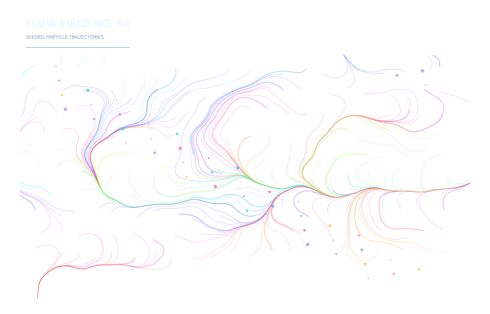

01 · particle systems
Flow field
What trajectories emerge from a seeded curl-like field?
src/main.ts
function flowField(p:p5){
heading(p,'FLOW FIELD NO. 42','SEEDED PARTICLE TRAJECTORIES');
p.colorMode(p.HSB,360,100,100,100);p.noFill();
for(let seed=0;seed<220;seed++){
let x=110+(seed%22)*55+p.random(-16,16), y=205+Math.floor(seed/22)*58+p.random(-15,15);
p.beginShape();
const hue=(175+seed*2.7)%360;p.stroke(hue,62,96,44);p.strokeWeight(seed%7===0?2.4:1.05);
for(let step=0;step<90;step++){
const a=p.noise(x*.0024,y*.0024)*p.TWO_PI*3.5 + Math.sin(y*.008)*.7;
x+=Math.cos(a)*5.2;y+=Math.sin(a)*5.2;p.vertex(x,y);
if(x<60||x>1340||y<160||y>850) break;
}
p.endShape();
}
p.colorMode(p.RGB);p.noStroke();
for(let i=0;i<45;i++){p.fill(palette[i%5]+'bb');p.circle(160+(i*173)%1120,190+(i*97)%610,4+(i%4)*2)}
}